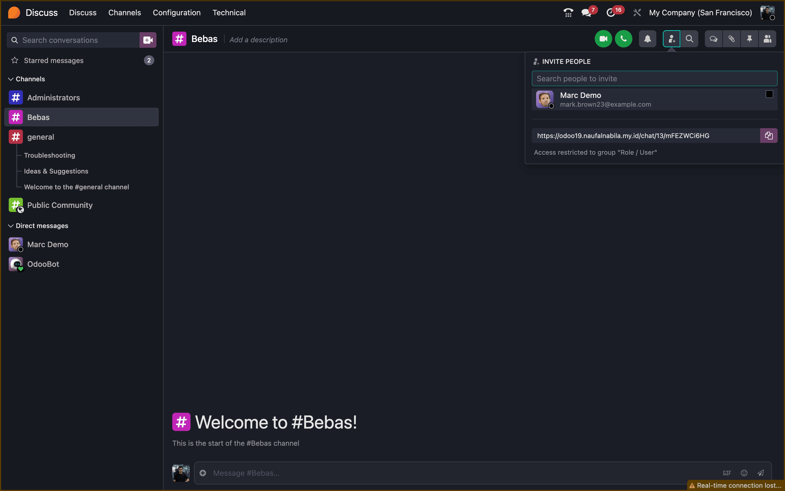

Anda dapat berkolaborasi dengan klien atau vendor yang tidak memiliki akun Odoo di perusahaan Anda melalui aplikasi Discuss.
Cara Mengundang:
1. Buka Channel yang ingin Anda bagikan.
2. Klik ikon Add Members (tanda tambah) di pojok kanan atas.
3. Pilih Invite to Channel.
4. Klik Copy Invitation Link untuk menyalin tautan unik.
Bagikan tautan ini kepada klien atau vendor. Mereka akan bergabung sebagai "Guest" tanpa perlu login.
1. Buka Channel yang ingin Anda bagikan.
2. Klik ikon Add Members (tanda tambah) di pojok kanan atas.
3. Pilih Invite to Channel.
4. Klik Copy Invitation Link untuk menyalin tautan unik.
Bagikan tautan ini kepada klien atau vendor. Mereka akan bergabung sebagai "Guest" tanpa perlu login.

📸 Screenshot: Pop-up 'Invite to Channel' dengan tombol Copy Link